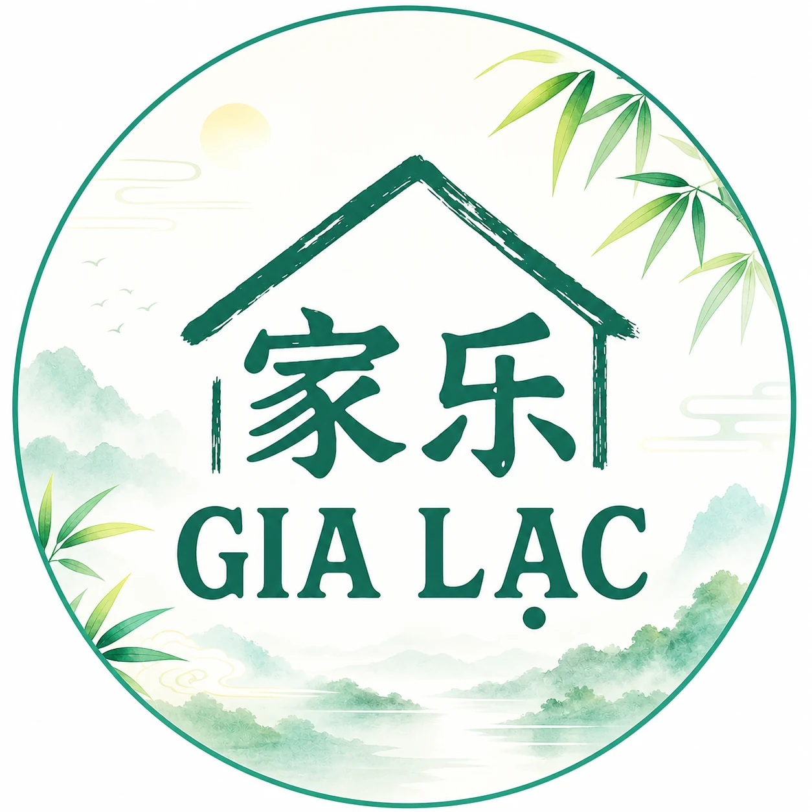
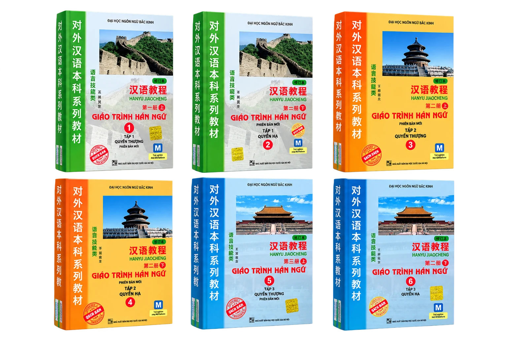

ÔN TẬP TỪ VỰNG VÀ NGỮ PHÁP
THEO GIÁO TRÌNH HÁN NGỮ
Tra từ · Phát âm · Hướng dẫn viết · Ngữ pháp · Luyện tập
📚 CHỌN GIÁO TRÌNH
📖 Từ vựng
📘 Ngữ pháp
🎯 Luyện tập
0
Từ vựng
0
Bài học
0
Chủ điểm ngữ pháp
0
Câu luyện tập
Tất cả bài
🔀 Trộn từ
📘 NGỮ PHÁP
🎯 LUYỆN TẬP
🔄 Làm lại
✍️ HƯỚNG DẪN & LUYỆN VIẾT
×
🔊 Đọc từ
👁 Hiện chữ
🖐 Luyện viết